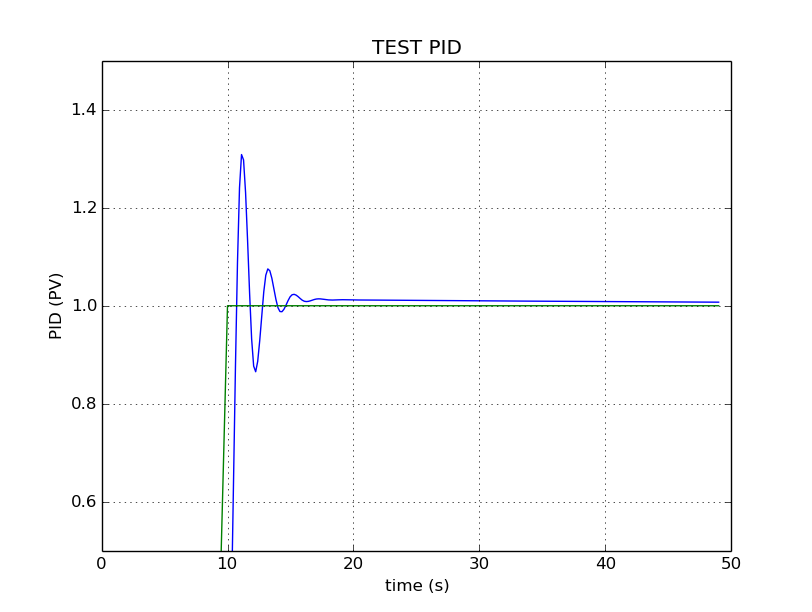

ivPID Ivmech Python PID Controller¶
PID Controller
Ivmech PID Controller is simple implementation of a Proportional-Integral-Derivative (PID) Controller at Python Programming Language. More information about PID Controller: http://en.wikipedia.org/wiki/PID_controller
-
class
PID.PID(P=0.2, I=0.0, D=0.0)¶ PID Controller
-
clear()¶ Clears PID computations and coefficients
-
setKd(derivative_gain)¶ Determines how aggressively the PID reacts to the current error with setting Derivative Gain
-
setKi(integral_gain)¶ Determines how aggressively the PID reacts to the current error with setting Integral Gain
-
setKp(proportional_gain)¶ Determines how aggressively the PID reacts to the current error with setting Proportional Gain
-
setSampleTime(sample_time)¶ PID that should be updated at a regular interval. Based on a pre-determined sampe time, the PID decides if it should compute or return immediately.
-
setWindup(windup)¶ Integral windup, also known as integrator windup or reset windup, refers to the situation in a PID feedback controller where a large change in setpoint occurs (say a positive change) and the integral terms accumulates a significant error during the rise (windup), thus overshooting and continuing to increase as this accumulated error is unwound (offset by errors in the other direction). The specific problem is the excess overshooting.
-
update(feedback_value)¶ Calculates PID value for given reference feedback
\[u(t) = K_p e(t) + K_i \int_{0}^{t} e(t)dt + K_d {de}/{dt}\]Test PID with Kp=1.2, Ki=1, Kd=0.001 (test_pid.py)
-